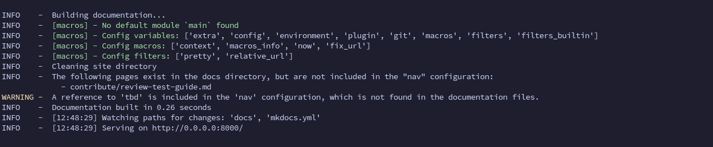

Reviewing and testing the changes
Since documentation can contain snippets and markdown from Material for MkDocs and pymdown-extensions projects, to properly test changes, whether while writing content or reviewing a Pull Request, a Containerfile is provided with the minimum packages to run the serving command for MkDocs.
Review Containerfile
Instructions to test changes
Building the container image
While writing content, from the root folder of the repository, simply build the image:
Running the container
Read here if you are reviewing a Pull Request
When reviewing a pull request, you need to create a temporary branch and fetch the content into it. Assuming user kubealex proposed a Pull Request involving the testing branch:
After the image is built, simply run the container mounting the current folder:
export HOST_PORT=8000
podman run -it --user $(id -u) --network podman -p $HOST_PORT:8000 -v ./:/opt/app-root/src:rw,Z mkdocs-testing
Replace the HOST_PORT variable with a free port on the host you are running the container.
If everything is working fine, the webserver will be listening on the desired port and reachable at the address http://localhost:8000
